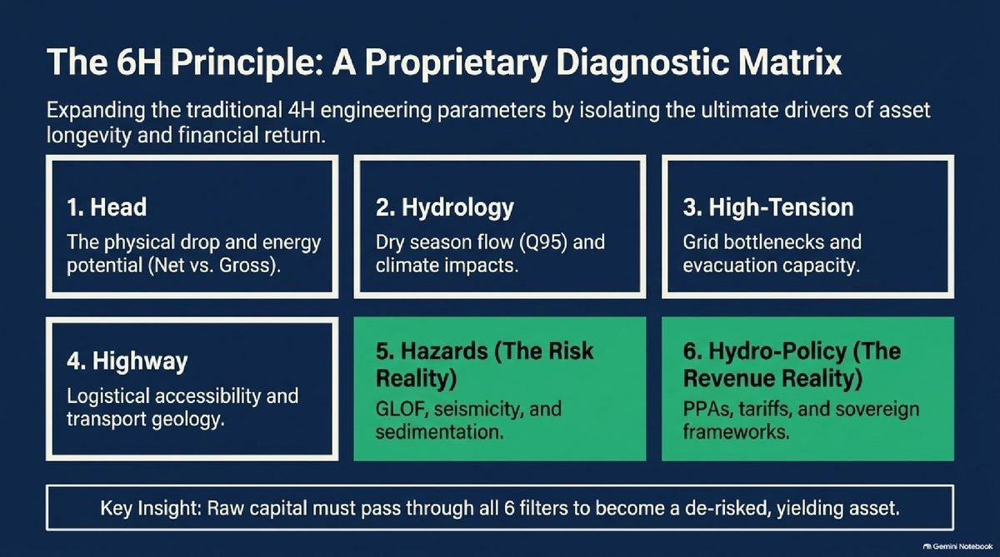
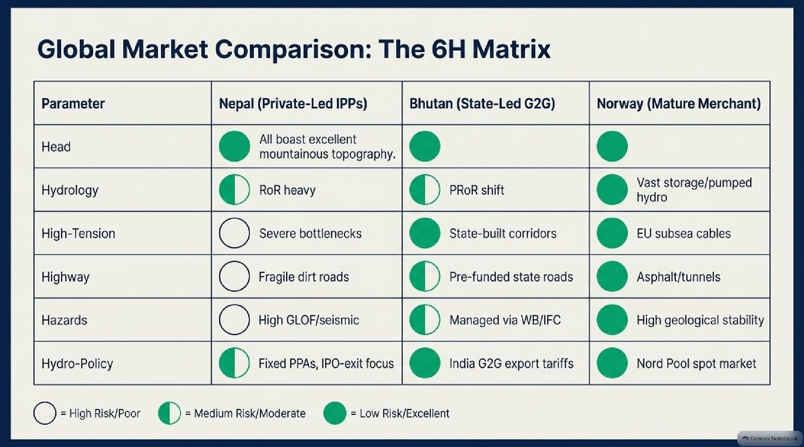

Research · Energy & infrastructure
The 6H framework: making hydropower investments bankable
Why Head, Hydrology, High-Tension and Highway are no longer enough, and how adding Hazards and Hydro-Policy changes how hydropower should be financed.
· 8 min read
Short answer: the 6H framework extends hydropower's classic 4H test (Head, Hydrology, High-Tension, Highway) with two investment filters: Hazards (floods, earthquakes, sediment) and Hydro-Policy (power purchase agreements, tariffs, currency and regulation). A project has to pass all six to count as bankable for decades, not just buildable.
Recent floods across Nepal and the Himalayas are a reminder that hydropower risk goes far beyond water and terrain. Hydropower projects have traditionally been screened with the 4H principle: Head, Hydrology, High-Tension and Highway. Those four tell you whether a project can be built and operated. They don't tell you whether it can survive climate shocks, regulatory change and governance risk, and stay bankable for decades.
The 6H Hydropower Investment Framework is my proposal to close that gap. It adds two filters, Hazards and Hydro-Policy, and treats all six as a due-diligence matrix that capital has to pass through before a project counts as a de-risked, yielding asset.
The hydropower paradox
Hydropower looks like an ideal long-term investment: assets that run for 50 to 100 years, predictable cash flows, low running costs, and a central role in grid stability. Nepal alone is often cited as having around 83,000 MW of potential. But the same projects carry massive upfront capital costs, exposure to glacial lake outburst floods and earthquakes, difficult mountain logistics, and complex regulatory, currency and cross-border sales risk. Investors who only look at engineering metrics are pricing half the picture.
The six H's

| Filter | What it tests |
|---|---|
| 1. Head | The physical drop and energy potential (net versus gross head). Higher head needs less water for the same power, which means smaller turbines and lower civil costs. |
| 2. Hydrology | Water flow across the seasons. The critical metric is dry-season flow (Q95), and whether the plant is run-of-river, vulnerable in the dry season, or peaking and storage, able to capture peak-hour prices. |
| 3. High-Tension | Grid access and evacuation: local congestion, substation capacity and monsoon line failures. In emerging markets, transmission limits and monsoon surpluses often force output cuts. |
| 4. Highway | Logistics and transport geology. Heavy electromechanical equipment needs high-capacity roads; dirt roads face landslides and monsoon wash-outs that delay construction and inflate costs. |
| 5. Hazards | Geological and climate risk: glacial lake outburst floods (GLOF), landslide-dam outburst floods, seismicity, and monsoon sediment that wears down turbines. |
| 6. Hydro-Policy | Sovereign and commercial risk: how bankable the power purchase agreement (PPA) is, dependence on a single buyer, currency risk, tariffs, and the shift toward open access and cross-border trade. |
Nepal, Bhutan and Norway through the 6H lens

- Norway (mature merchant market, around 33,000 MW): large reservoir and pumped-storage fleets give control over water release; a liberalised market sells on Nord Pool and exports through high-voltage subsea interconnectors; hazards are mostly about environmental compliance rather than catastrophic events.
- Bhutan (state-led, government-to-government, around 3,490 MW): projects are backed by government-to-government agreements with India, grant and debt financing, and guaranteed offtake at cost-plus tariffs. That removes most market and currency risk; the deck uses the 1,125 MW DHPP project, developed with Tata Power, as its case study.
- Nepal (private-led independent power producers, around 4,000 MW): more than 90% of capacity is seasonal run-of-river. The opportunity is real, with open-access reforms and emerging power exports to India and Bangladesh. But the 6H friction points are grid bottlenecks that cut output during monsoon surpluses, high GLOF and seismic risk, fragile access roads, and producers whose business models lean toward IPO exits rather than long-term dividends.
My recommendation for Nepal: capital should move from simple megawatt targets toward storage and peaking projects, with much stricter hazard due diligence.
Where projects succeed or fail
- Feasibility and structuring (years 1–3). Critical H's: Head, Hydrology, Hydro-Policy. Verify Q95 dry-season flows, secure land rights, and lock in take-or-pay PPAs before committing capital.
- Construction and civil works (years 3–8). Critical H's: Highway, Hazards. Manage mountain logistics, tunnelling through seismic fault lines, and local labour influx to avoid cost overruns.
- Commercial operation (years 8–50+). Critical H's: High-Tension, Hazards. Guarantee grid evacuation without curtailment, manage monsoon sedimentation, and optimise generation against market tariffs.
A four-question due-diligence playbook
- Offtake and revenue security: is there a take-or-pay PPA, and a clear mechanism for currency risk, especially in cross-border trade?
- Debt service coverage: does the financial model stress-test dry-season hydrology and still keep a debt service coverage ratio above 1.2x?
- ESG and climate-finance alignment: does the project meet IFC Performance Standards (biodiversity, resettlement), and could it qualify for green bonds and lower-cost capital?
- Infrastructure verification: is high-tension evacuation guaranteed, or is the project at risk of monsoon curtailment?
Beyond the megawatts
Energy optimisation in hydropower is not just about technical upgrades. It is about turning power plants into sustainable economic assets. The 6H framework aims to turn a geological gamble into a structured, de-risked institutional investment. In a climate-vulnerable region like the Himalayas, sustainable infrastructure must be resilient infrastructure.
For academic and research purposes only. Not investment advice. First published on LinkedIn on 7 September 2026 as a 14-slide deck.
See the full 14-slide deck on LinkedIn, or get in touch for hydropower and infrastructure research or financial modelling work.
View the deck on LinkedInFrequently asked questions
What is the 4H principle in hydropower?
The 4H principle is a traditional way of screening hydropower projects using four engineering tests: Head (the height the water falls), Hydrology (water flow), High-Tension (grid connection and evacuation) and Highway (access and logistics).
What is the 6H hydropower investment framework?
The 6H framework, proposed by Biggyat Kumar Pandey, extends the 4H principle with two investment filters: Hazards (glacial lake outburst floods, seismicity and sedimentation) and Hydro-Policy (PPA bankability, tariffs, currency and regulatory risk), so projects are judged on whether they stay bankable for decades, not only whether they can be built.
What are the main risks of hydropower investment in Nepal?
Grid bottlenecks that force output cuts during monsoon surpluses, glacial lake outburst floods and seismic risk, fragile access roads, sediment damage to turbines, dependence on a single power buyer, and currency risk in cross-border power trade.
What is Q95 in hydropower?
Q95 is the river flow that is equalled or exceeded 95% of the time. It represents dry-season flow and is a critical metric for how much power a run-of-river plant can reliably generate.
What is a take-or-pay PPA?
A take-or-pay power purchase agreement obliges the buyer to pay for an agreed amount of electricity whether or not it takes delivery, which protects a project's revenue and makes it easier to finance.